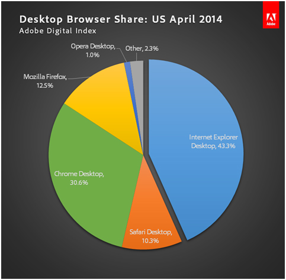

Browsers
Table of Contents
- 1. What is a Web Browser?
- 2. What is the core?
- 3. Features
- 4. Address Bar -> Web Page
- 5. What is a Browser?
- 6. Why Separate the Browser from Websites?
- 7. Browser or Web Page?
- 8. Browsers, Apps, Operating Systems
- 9. Market Share
- 10. Utilities
- 11. Questions
- 12. Browsing Information Not a New Idea
- 13. World Brain
- 14. Homework
1 What is a Web Browser?
1.1 Many things notes
- "Thing I type Google into"
- Loads data from the Internet
- Displays it
- Runs Javascript
- has plugins
2 What is the core?

- WorldWideWeb (confusingly named) the first browser
- Tim Breners-Lee wrote it to share data with colleagues at CERN
- Display HTML with Style Sheets from remote servers
- Editing was built into the first version
- Support different Protocols: FTP, HTTP, NNTP, local files
2.1 Symmetric usage notes
- Belief was that one would be creating as much as consuming information
- Plus, can't build a browser if there's nothing to browse!
- Already supported protocols for transferring files, reading newsgroups
- Images originally displayed in a separate window. Eventually inlined.
3 Features
- Network access
- Interpreting the fetched data
- Possibly fetching and interpreting dependencies like images
- Rendering HTML with CSS rules
- Running scripts in the context of the web page
- Utility functions
3.1 Examples notes
- Network access
- HTTP
- Fetched Data
- HTML, CSS
- Rendering
- Displaying a table with row and column lines
- Scripts
- Validating a password before submitting
- Utility functions
- tabs, bookmarks, plugins
4 Address Bar -> Web Page
- Analyze address bar to determine protocol and server
- Connect to server, download data and all dependencies
- Analyze HTML, generate a Document Object Model (DOM)
- Apply CSS to the DOM
- Display the DOM
- Start executing scripting code and re-render the DOM as required
- Continue executing and interpreting user actions
4.1 Definitions notes
- DOM
- A way of representing the HTML so that it can be analyzed and modified
- scripting
- programming language designed to work with web pages, eg. Javascript
- Recursive
- Each of these steps have at many steps underneath them
5 What is a Browser? center
6 Why Separate the Browser from Websites?
- Composability!
- Improve the features around the website without upgrading the website
- Original browser did not have Forward Back buttons
- Accessibility
- Tradeoff is the layouts need to follow rules, designers must design with multiple audiences in mind
6.1 Flexibility notes
- Separating the content from the presentation allows you more flexibility with how you want to use it
- What if you could only view websites like a TV image. No cut+paste, viewing on mobile vs. desktop
7 Browser or Web Page?
 Internet Explorer
Internet Explorer
-

-

- Firefox

- Others?
8 Browsers, Apps, Operating Systems
- Traditionally, browsers were applications running in an OS like Windows
- Scripting enables browsers to run their own code
- Complex web pages (eg. Gmail) behave almost like an application
- Browsers could become an OS themselves, ala ChromeOS
- Some Apps now written entirely in Javascript
9 Market Share

9.1 Numbers notes
- Significant sampling bias
- Eg. wikimedia sees 46% Chrome, 11% IE
10 Utilities
- Firefly for Firefox, Developer Tools for Chrome
- Enable you to modify the page as you're viewing it
- Valuable for understanding how HTML and CSS are rendered
11 Questions
- What is CSS used for?
- What are some of the utilities you use in your browser?
12 Browsing Information Not a New Idea center
Paul Otlet
13 World Brain
- Proposals for Encyclopaedia from H.G. Wells 1937
- Engelbart developed oN-Line System (NLS) that used HyperText 1960s
- "Notecards" at Xerox PARC 1984
14 Homework
- Learn git for future homework submissions
- practice sending a homework
- reading